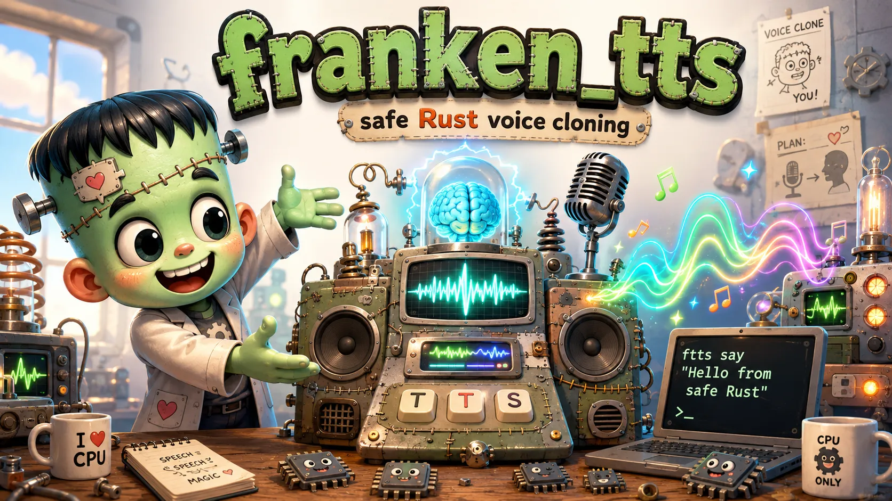

A clean-room, pure-Rust port of Qwen3-TTS-12Hz-0.6B voice cloning — no Python, no PyTorch, no GPU, no server. The same engine that runs faster than real time as a native CLI, compiled to WebAssembly and stitched into this page. Nothing you type or record ever leaves the tab.

Download the model once, then type on the left and listen on the right. The actual engine — compiled to WebAssembly, running in a worker in your browser — synthesizes every sample locally. No server. No mock. The monster itself.
First use downloads the quantized model (≈2.0 GB) into this browser's private storage — verified against pinned SHA-256 digests, resumable, cached until you clear it. After that, the page loads it straight from storage.
Before downloading: the model is 2.0 GB. It lives only in this browser's private storage for this site (nothing is installed on your filesystem), it stays on your device, the download resumes if interrupted, and “Clear model cache” removes it. On a typical 100 Mbps connection this takes about three minutes.
Cloning runs the speaker encoder locally on your recording; the audio is discarded once the 4 KB voice vector exists. Clone only voices you have the right to use.
Speed honesty: this build is single-threaded WASM at roughly 0.2–0.3× real time — a five-second line takes twenty-odd seconds. The native CLI runs faster than real time; browser threads are the roadmap. Desktop browsers only: the engine needs several GB of memory.
Every 80 ms frame of speech passes through the whole creature — and the hidden middle organ is the real monster.
A 28-layer transformer predicts each frame's first, semantic-rich codec token — int8 kernels with exact i32 accumulation, argmax-verified against the PyTorch oracle through every layer.
The hidden monster: a 5-layer residual-code predictor that runs fifteen sequential times inside every frame — per-depth embeddings, per-depth 2,048-way heads. franken_tts treats it as the design center, not a liability.
A fully causal decoder turns 16 code groups into 1,920 samples of 24 kHz audio per frame — streaming output bit-identical to offline decoding under every packet schedule.
Built-in voices ship inside the binary as 4 KB x-vectors — matt (the default), james, leo, robert, judy, aria, and ember — and a ten-second recording of your own voice becomes the eighth.
The CLI runs the same engine with native int8 kernels and a persistent worker team — faster than real time on Apple Silicon.